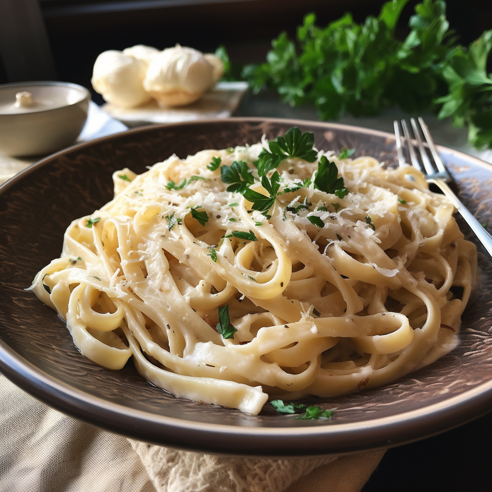

To Die For Fettuccine Alfredo

Description
This rich and creamy fettuccine Alfredo recipe is easy enough for beginner cooks, but it's impressive enough for company.
I must warn you, this recipe is not for the health-conscious!
Ingredients
- Pasta: Of course, you'll need fettuccine pasta.
- Butter: This Alfredo sauce starts with two sticks of butter.
- Cream: The rich sauce calls for almost a cup of heavy cream.
- Seasonings: The fettuccine Alfredo is simply seasoned with salt, pepper, and garlic salt.
- Cheese: You'll need Romano and Parmesan cheeses.